Digagas 2013 · Berdiri 2017 · Untuk Indonesia Raya
Kretek warisan yang bertemu teknologi masa kini — untuk kebanggaan dan kesejahteraan Indonesia.
Jelajahi Produk Kami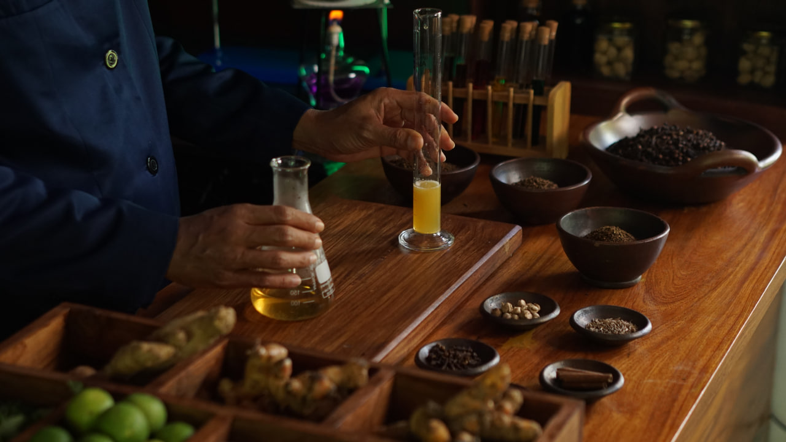
Tentang Kami
Dari Jombang, Untuk Indonesia Raya
PT Sehat Tentrem Jaya Lestari resmi berdiri pada 2017, digagas sejak 2013 oleh M. Subchi Azal Tsani (Mas Bechi) — putra Kiai Moch. Mukhtar Mu'thi, Mursyid Thoriqoh Shiddiqiyyah. Berawal dari keprihatinan terhadap kondisi ekonomi umat, beliau merintis usaha dari lingkungan Pesantren Majma'al Bachroin Chubbul Wathon Minal Iman Shiddiqiyyah, Jombang.
Lebih dari sekadar industri rokok, ST adalah gerakan dakwah: dakwah keimanan kepada Allah, dakwah kemanusiaan untuk sesama, dan dakwah kealaman untuk bumi Nusantara. Setiap batang kretek yang terracik adalah wujud nyata dari semangat "Untuk Indonesia Raya" — membangun kemandirian ekonomi umat dari tanah Jawa Timur.
Kini ST telah berkembang menjadi ekosistem bisnis: Kopi Tombo, Susu Tombo ST, ST Beverage, Klambi ST, Mumtaaj Scarf, dan Musik Sehat Tentrem (MST) — semuanya bergerak dalam satu nafas besar: Indonesia Raya.
" Kretek warisan yang bertemu teknologi masa kini —
untuk kebanggaan dan kesejahteraan Indonesia. "
Koleksi Produk
Sigaret Kretek Tangan Pilihan Nusantara
Diracik dari tembakau pilihan, cengkih, jinten, dan rempah-rempah Nusantara — setiap varian ST adalah karya yang lahir dari hati, untuk Indonesia Raya.
Harga bervariasi per wilayah · Cari toko terdekat →
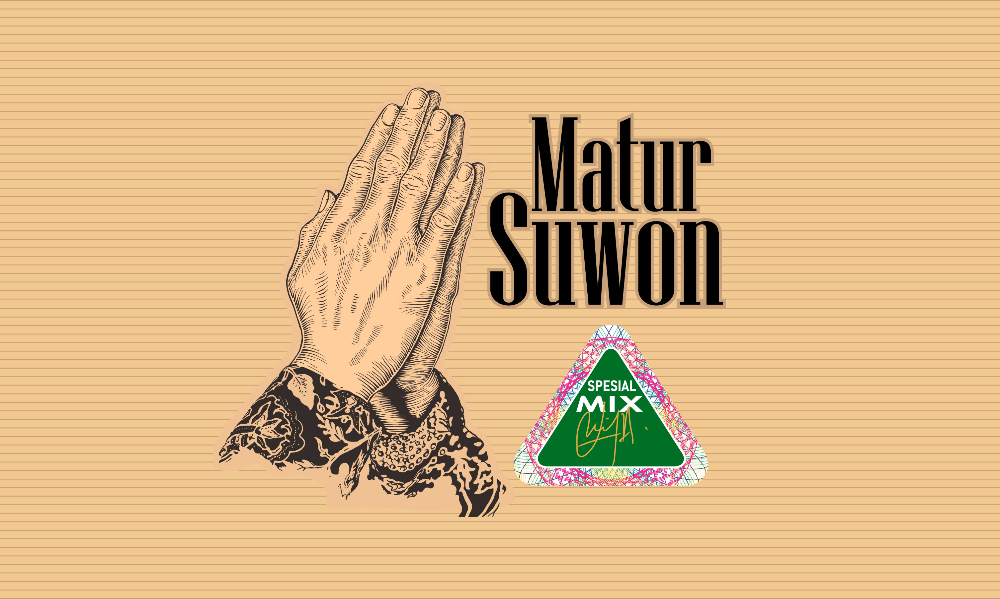
Matur Suwon SM
Formulasi Spesial Mix dari tembakau dan rempah-rempah pilihan Nusantara. Rasa gurih, tebal, dan tetap halus. Nama berarti "Terima Kasih" — wujud syukur ST untuk Rakyat Indonesia.

Raos Ngeten Puron
Kretek dengan rasa paling tebal dan kuat dari seluruh varian ST. Tembakau diformulasikan dengan rempah-rempah antioksidan pilihan — kekuatan rasa khas Nusantara dalam setiap hisapan.

Raos Ngeten Mawon
Rasa seimbang antara kuat dan halus. Tembakau medium dengan campuran rempah mirip varian premium — pintu masuk menuju cita rasa premium ST dengan harga lebih terjangkau.
Merah Putih
Persembahan untuk mensyukuri kemerdekaan dan berdirinya NKRI. Rasa halus dan gurih, formulasi rempah-rempah antibakteri. Kini hadir dengan kemasan baru dan cita rasa lebih stabil.
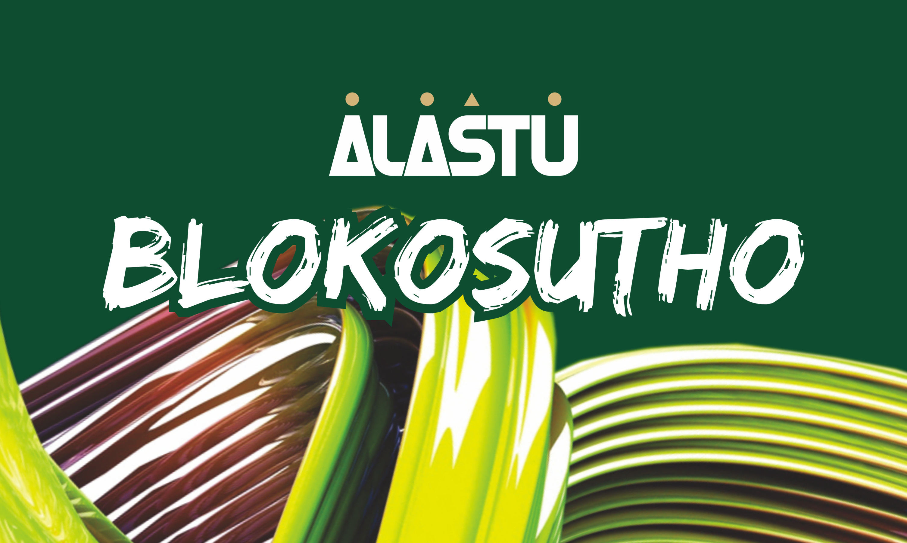
Alastu Blokosutho
"Terus terang, apa adanya." Tembakau kualitas tinggi dengan formulasi rempah khusus mengandung antibodi — meningkatkan daya tahan tubuh dan memerangi bakteri serta virus penyebab penyakit.
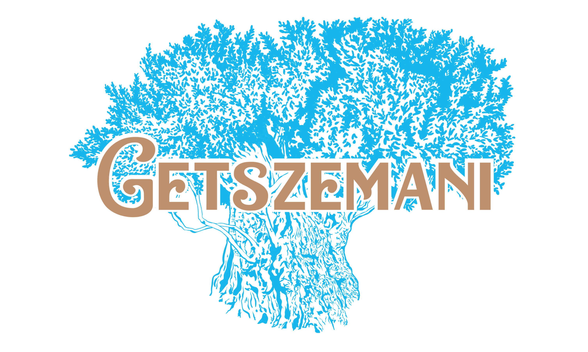
Getszemani
Satu-satunya kretek ST bersiluet ramping (slim). Halus, ringan, namun tetap autentik. Terinspirasi dari Taman Gethsemane di kaki Bukit Zaitun. Diformulasikan dengan rempah kaya manfaat.

Raos Paling Eco
"Rasa Paling Enak." Perpaduan tembakau, cengkeh, rempah-rempah, dan madu murni berkualitas tinggi. Nikmat, sedap, manis, halus, dan harum — ekspresi cita rasa puncak kretek Indonesia.
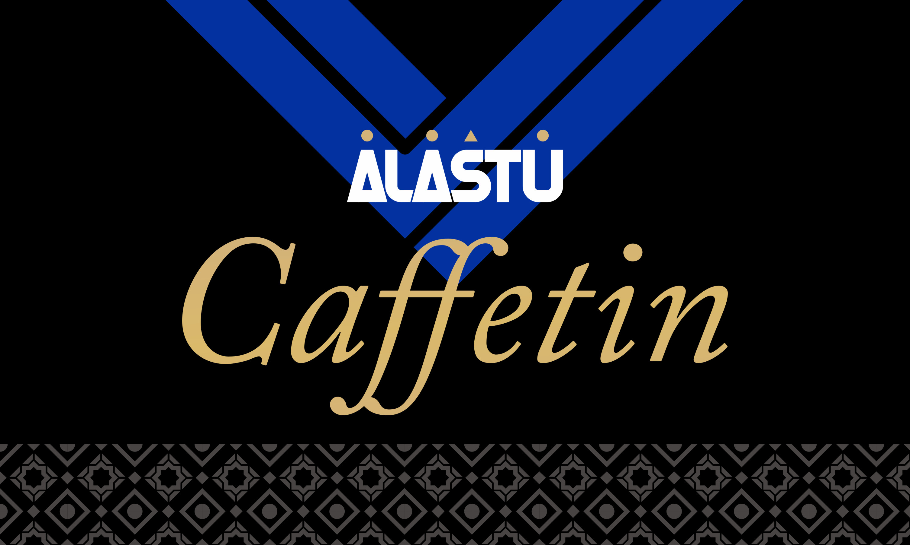
Alastu Caffetin
Kretek putih tanpa filter. Singkatan dari Caffeine dan Nicotine. Formulasi rempah berkualitas tinggi menghasilkan rasa ringan saat dihisap, namun tetap gurih dan nikmat.

RPE Spesial Oxy
Varian unggulan Raos Paling Eco dengan teknologi Oxytron — boost oxygen menghadirkan hentakan rasa lebih tajam, hisapan tetap smooth dan cool. Puncak inovasi tradisi kretek Indonesia.
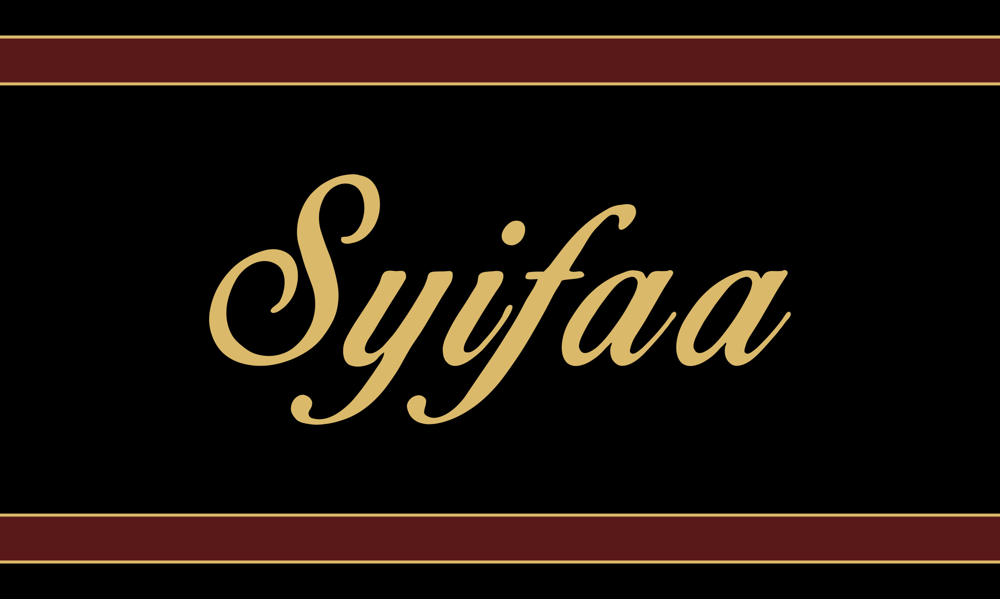
Syifaa
"Obat" dalam bahasa Arab. Varian paling premium — tembakau kualitas tertinggi, formulasi rempah paling intens, dilengkapi madu murni terbaik. Ukuran lebih panjang, khasiat lebih kaya.
Brand Ambassador
Wajah Sehat Tentrem
Mereka yang mewakili semangat "Untuk Indonesia Raya" — jiwa-jiwa autentik yang menginspirasi jutaan insan Indonesia.
Event Terbaru
Hadir Di Tengah Masyarakat
Berbagai kegiatan dan partisipasi Sehat Tentrem dalam merawat budaya dan kebersamaan.
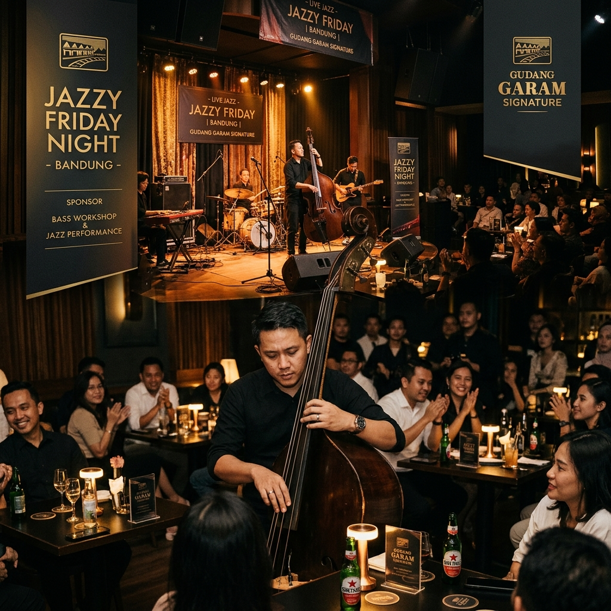
Jazzy Friday with Indro Hardjodikoro
Intimate Jazz Night bersama ambassador ST, Indro Hardjodikoro di Ruang Putih Bandung.
Lihat di Instagram →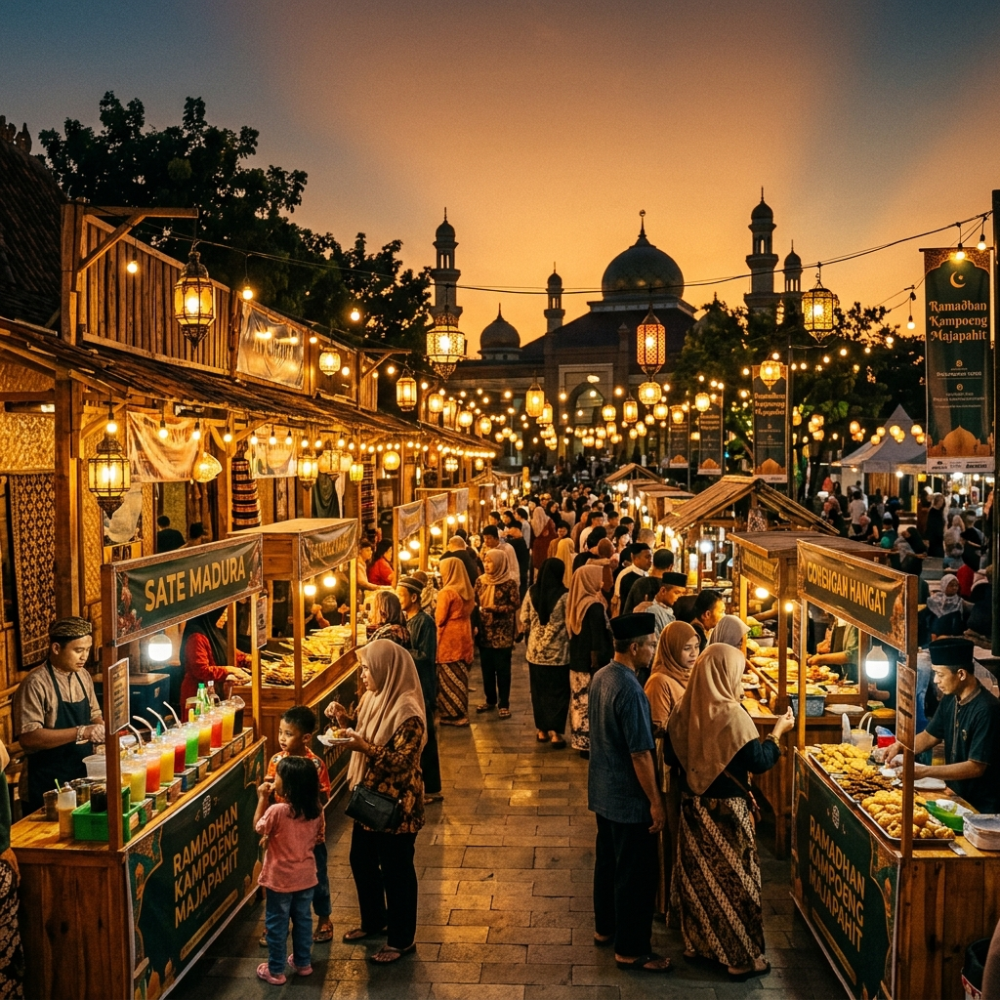
Ramadhan Kampoeng Majapahit
Berbagi inspirasi, cerita, dan suasana hangat Ramadhan bersama Sehat Tentrem di Mojokerto.
Lihat di Instagram →Pengajian Tasyakkuran Isro' Mi'roj
ST memeriahkan Pengajian Tasyakkuran Isro' Mi'roj Nabi Muhammad SAW dan Hari Shiddiqiyyah 1447 H.
Lihat di Instagram →Cerita ST
Perjalanan Menemani Nusantara
Awal Mula Peramuan Resep
Di lingkungan Pesantren Shiddiqiyyah, Jombang — M. Subchi Azal Tsani (Mas Bechi) mulai merintis cita rasa Sehat Tentrem. Empat tahun proses pencarian: memilih tembakau, menakar cengkih, dan meramu rempah Nusantara. Sebuah perjalanan penemuan yang berbuah resep, dengan satu nafas: Untuk Indonesia Raya.
Berdirinya PR. Sehat Tentrem Jaya Lestari
Setelah resep matang dan formula stabil, ST resmi berdiri sebagai PR. Sehat Tentrem Jaya Lestari. Bisnis rumahan dengan kurang dari 20 karyawan menjadi cikal-bakal industri Sigaret Kretek Tangan (SKT) yang membawa semangat dakwah ekonomi umat.
Lahirnya Ekosistem ST Group
ST berkembang melampaui kretek — lahirnya Kopi Tombo, Susu Tombo ST, Klambi ST, dan Musik Sehat Tentrem (MST) sebagai satu ekosistem bisnis terintegrasi yang saling menguatkan.
ST Naik Level Menjadi Perseroan Terbatas
PR. Sehat Tentrem naik level menjadi PT. Sehat Tentrem. Ratusan karyawan, jaringan agen di 34 provinsi, dan program CSR aktif — Sehat Tentrem tumbuh sebagai perusahaan yang memberi manfaat nyata bagi Nusa dan Bangsa.
Babak Baru — Tumbuh Bersama Indonesia
Memasuki tahun ke-13, ST menapaki babak baru: penguatan ekosistem distribusi, kolaborasi dengan mitra di seluruh Nusantara, dan percepatan pertumbuhan. Dari Jombang ke seluruh negeri — semangat "Untuk Indonesia Raya" mengalir dalam setiap karya.
Tanggung Jawab Sosial
Nyata Untuk Sesama
"Untuk Indonesia Raya" bukan sekadar slogan — ia terwujud dalam aksi nyata yang menyentuh kehidupan masyarakat setiap harinya.
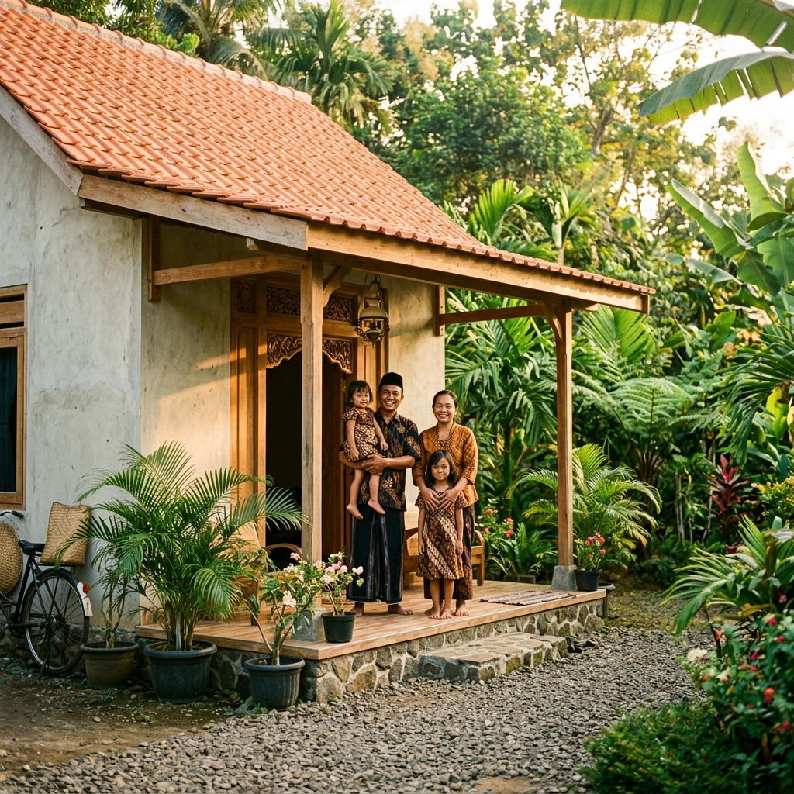
Rumah Syukur Layak Huni
Program pembangunan Rumah Syukur Layak Huni Shiddiqiyyah — memastikan saudara-saudara kita memiliki tempat bernaung yang layak dan bermartabat.
Infrastruktur Sosial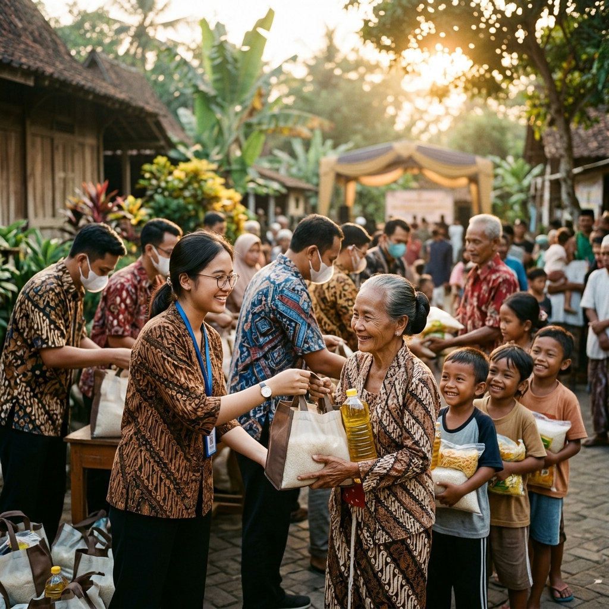
Santunan & Pengobatan Gratis
Penyaluran sembako, santunan anak yatim dan dhuafa, serta pengobatan gratis dan pasar murah — tanpa memandang suku maupun agama.
Kemanusiaan & Kesehatan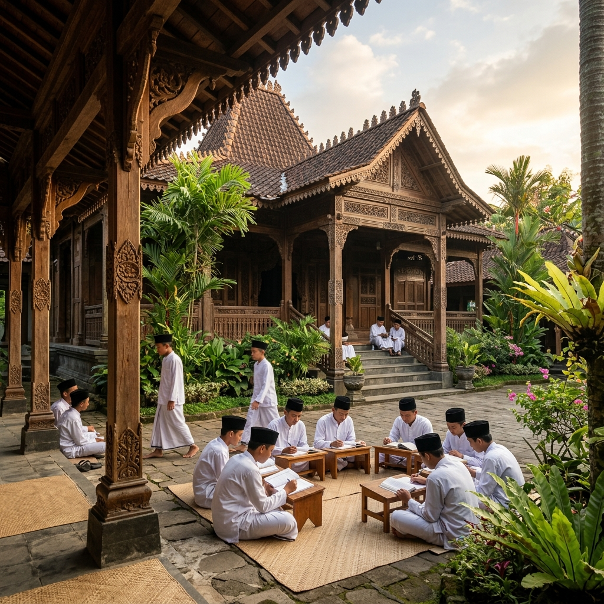
Pemberdayaan Masyarakat Pesantren
Menumbuhkan kemandirian ekonomi umat melalui ekosistem bisnis yang berpusat di lingkungan Pesantren Shiddiqiyyah, Jombang.
Ekonomi UmatHubungi Kami
Temukan ST di Dekat Anda
Untuk informasi produk, distribusi, atau pertanyaan lainnya, silakan hubungi kami melalui kontak di bawah ini.
- 📍Jl. Raya Kabuh–Tapen, Desa Kauman, Kec. Kabuh, Kab. Jombang — Jawa Timur, Indonesia Raya
- 📞+62 811 344 1217
- 🌐info-st.com
- 🕐Senin–Jumat, 08.00–17.00 WIB